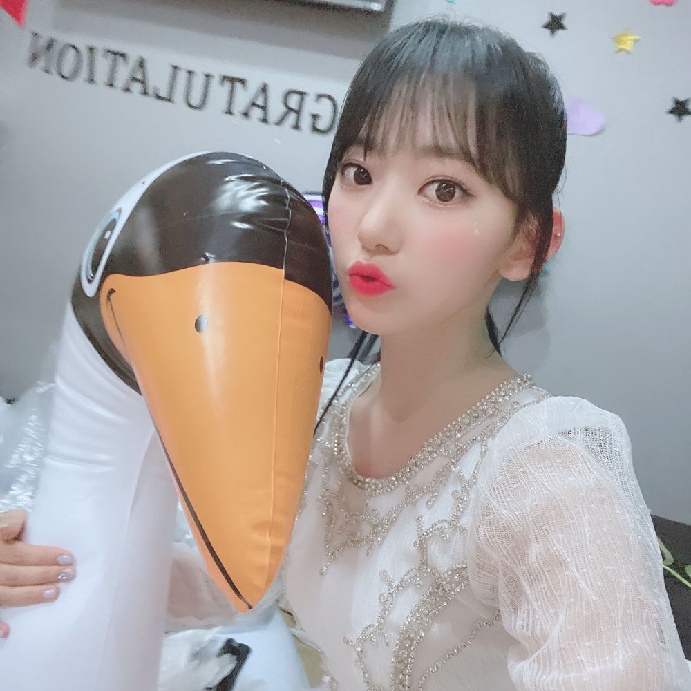
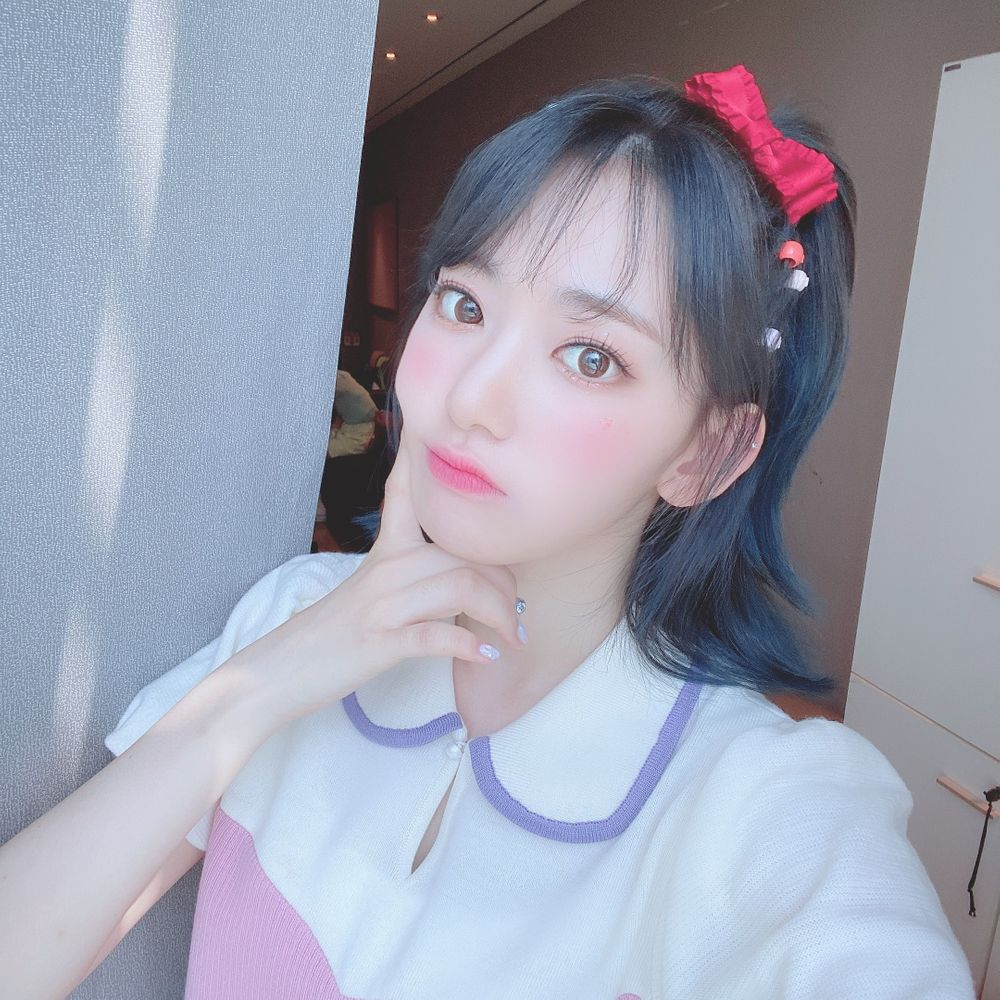

今日は音楽中心！！
ミンジュのMCを生で見れて楽しかったぁ😊💗
頑張ってた〜もう既に板についてて凄い🥺💗
幻想童話では、白鳥のように🦢

prettyでは、シュガーラッシュっていう映画のヴァネロペをイメージしてみたよん🎮💗

私が髪の毛暗くして、ポニーテールをすると
ヴァネロペに似てるって言われるようになって！
ファンの方にも、ユジンにも笑笑
今日は、コンセプトとしてがっつり真似てみた🥺
我ながら似てると思う…笑
耳の大きさといい、ゲームの中に出てくる主人公というキャラクター性といい…笑
知らない人は調べてみて！
私は、映画2までしっかり見てるものです🥺
ゲームヲタクとしては最高の映画なんです🥺
오늘은 음악 중심!
민주의 MC를 직접 봐서 즐거웠어 😊💗
열심히 하고 있는 모습 멋있어 🥺💗
오늘 환상 동화 는 백조처럼 🦢
pretty에서는 슈거 러시라는 영화의 Vanellope 를 이미지하고 해봤음 🎮💗
내가 머리카락 어둡게 하고 포니테일을 하면
Vanellope 랑 닮았다고 많이 들어서
팬들이 도 유진이도~ㅎㅎㅎㅎ
그래서 오늘은 컨셉으로서 해봤어🥺
스스로도 비슷하다고 생각해ㅋㅋㅋㅋ
귀 크기라는 거 랑 게임 중에 나오는 주인공이라는 캐릭터성ㅋㅋㅋㅋ
모르는 사람은 검색 해보세용
나는 영화 2까지 제대로 봤지렁 🥺
게임 오타쿠로서 최고의 영화 🥺